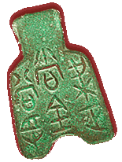

This is a 'hoe' or a spade shaped coin. Early Chinese money copied the form of real tools but were generally made of thinner metal. Other shapes included knives and copies of cowrie shells. The inscription here simply reads 'Anyang'.

The inscription on this hoe coin reads 'Standard money of Liang worth 100 equal to one lie'.